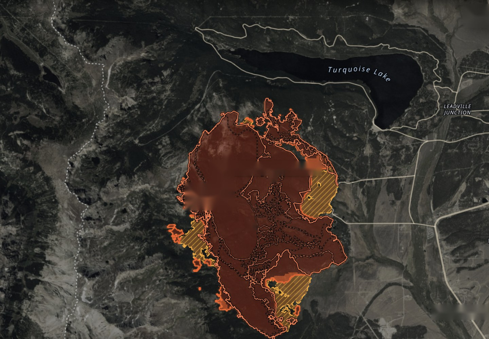

39.23708° N · 106.43677° W
SELECTED
Observed fire
7,359 AC · OCT 23 14:30 MDT
Modeled spread
BY OCT 26 14:30 · EXPERIMENTAL
Willow
LIVE
Leadville, Colorado
VIIRS NOAA · 375 M · 6.2 H AGO
39.23708° N
106.43677° W
39°14′13.5″ N · 106°26′12.4″ W · UTM 13N 376001 E 4344069 N · WGS84
Inside the mapped fire area. Burned around Jun 28, 16:44 MDT (estimate), 0.7 mi from the edge.
MAPPED JUL 12 · 01:21
STALE · 104 D
MODELThis spot was already inside the burned area when the run started (Oct 23, 14:30 MDT).
7,359ac— BURNED
92%— CONTAINED
39.23359° N · 106.44033° W
— REPORTED LOCATION · USFS VIA NIFC WFIGS
2026-willow-548a8d— INCIDENT ID
OFFICIAL NOW
TIMES IN MDT
{{n.detail}}
Fire-3d's modeled spread is experimental and is not an evacuation order. Follow local officials.
View all updates
Observed
Modeled
Perimeter
Selected
1 mi
ISSUED OCT 23 18:01 · NOW 20:43 MDT
{{stopLabel}} · {{stopKind}}
JUN 28
LATEST 14:30 · 6 H AGO
+24H
+48H
+72H
RESEARCH PROTOTYPE — NOT FOR OPERATIONAL USEOpenFreeMap · © OpenMapTiles · © OpenStreetMap · USDA, USGS · MapLibre · Open-Meteo · NWS · FEMA IPAWS via OpenFEMA (not endorsed by FEMA)